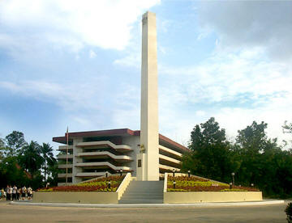

The Obelisk, standing majestic on its base, depicts the strength of the Polytechnic University of the Philippines as an institution of higher learning, promoting educational and moral aims which are fortified by a determined leadership with a clear vision for the Filipino youth and an efficient support system inspired by the virtues of public service.
On top is the University Star Logo , symbol of PUP's image as the Light of the Nation. It stands for the perfection of the human person and the search for truth. Its five concentric circles represent infinite wisdom and each point of the star signifies integrity, ingenuity, industry, intelligence and internationalism the core values of PUP as a Total University.